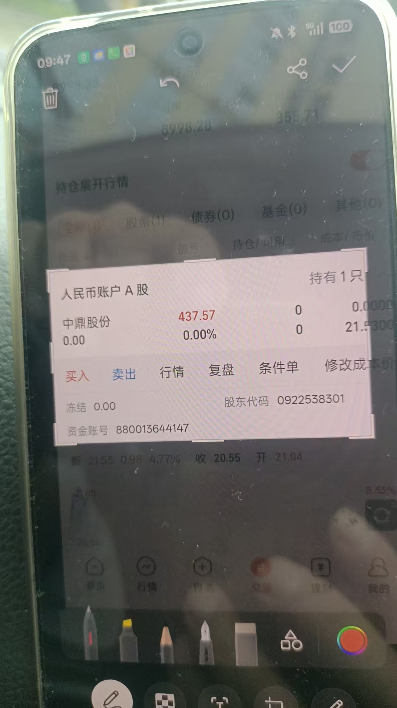
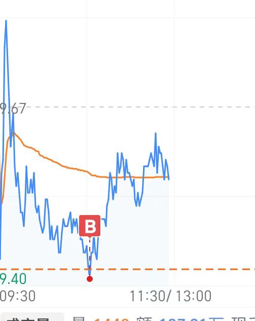

20260605脑屏炒股
原始对话记录
昨天买的
刚才卖了
437.57
投入八千
[呲牙][呲牙][呲牙]

今天买的
就是脑屏里出的最低数字
买进了
低点跟高点差了六角
如果开盘再到今天高点，
就能赚五百四
就是清晰的看到高低点
不买长线
没有一个好企业，买长线必赔
以下为编者整理的主题文章
编者整理 · 主题文章
记一笔：脑屏里出的数字
导读：一段很短的记录。昨天买的一笔，刚才卖了；今天又买一笔，买进的时点来自闭眼在脑中成像时"看到"的最低数字。他只留下几个数字和两张截图，没有多写别的话。
记录很干净。两段，两张截图，几个数字。
第一段是昨天买的，刚才卖了。卖出价写在后面：437.57。本金八千。他没有多写一句为什么，只把两个数字并排放在那里。
第二段是今天买的。买进的理由只有一行："就是脑屏里出的最低数字，买进了。" 又说低点和高点差了六角。再一句，是他写自己"清晰的看到高低点"。末尾补一句："不买长线，没有一个好企业，买长线必赔。"
这就是这一页的全部。
他做的是短线。买进的时点来自闭眼在脑中成像时"看到"的那个数字，不是行情，也不是报表。他没有写持有几天，也没有写别的东西。截图在下面，数字在上面。
在这一套体系里，"脑屏"是用得最频繁的一个词。闭眼，在脑中成像，然后照着做选择——选酒店、选哪一桌、买菜挑哪个，都用它。这一页只是把它用在了买卖上，并且把每次的数字留下来。
两笔之间隔了一天。前一笔是昨天进的，后一笔是今天的。他没有写买了多少股，也没有写隔了多久出手。
一页读完，我只看到数字的进出。对和错，他一个字也没有写。
说明与免责：本站为民间修炼、民俗文化与传统文化资料的整理与记录，内容源自传承者口传与个人修习体会，仅供文化交流与研究参考，不构成医疗、健康、投资或任何功效承诺。所述内容属传统术数范畴，请理性看待；如身体不适，请及时就医。请遵守法律法规与公序良俗。